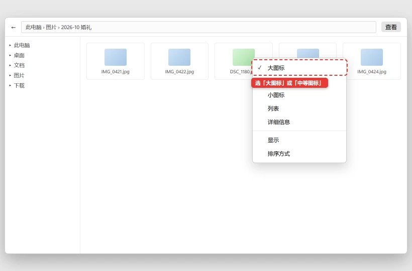

Windows 文件图标变白 / 缩略图不显示怎么修
清理缓存会让桌面和文件夹短暂消失，并让图片缩略图重新生成。它不会删除照片、视频或文档本身，也不会改变文件内容。
💡 一句话结论
缩略图和图标由多个缓存数据库负责，缓存损坏时会显示白纸、错图或忽然不显示。先确认只是图标问题而不是文件损坏，再清理当前用户的 thumbcache 和 iconcache 让 Windows 自动重建。
⚡ 30 秒快速排查（先试这个）
- 双击图片能否用看图软件正常打开？能打开就说明文件没坏，问题只在预览缓存或图标关联。
- 文件资源管理器 →“查看” →“显示” → 确认“项目复选框”等设置没有误改，再检查“查看”是否被设成了“详细信息”而不是“中图标/大图标”。
- 先试试运行本文 BAT。桌面闪一下属于正常现象，缓存重建需要几分钟。
纯小白模式 · Windows
小白一键修复
不想研究原因，就下载脚本，右键选择“以管理员身份运行”。脚本执行前仍会再次确认。
- 适合Windows 10/11，图片缩略图空白、文件图标变白或图标错乱。
- 脚本会重启资源管理器，删除当前用户可自动重建的缩略图与图标缓存。
- 运行前保存桌面上的工作，关闭正在复制文件的文件夹窗口。
- 注意首次重新打开图片较多的文件夹时，缩略图会慢慢生成，不会瞬间全部出现。
运行方式：下载后先解压（如有），右键 BAT 文件 → 以管理员身份运行 → 阅读提示后选择 Y。浏览器若提示“不常见文件”，请先核对文件名与下方源码。若浏览器无法下载，点“复制全部脚本”，粘贴到记事本，保存类型选择“所有文件”，文件名以 .bat 结尾。
查看完整 BAT 源码
@echo off
chcp 65001 >nul
setlocal EnableExtensions
title 修盒子 - 重建缩略图与图标缓存
echo ============================================================
echo 修盒子 - 重建缩略图与图标缓存
echo ============================================================
echo 适用于：图片缩略图空白、文件图标变成白纸、
echo 或资源管理器里出现错乱、重复、显示错误的图标。
echo.
echo 将重启 Explorer，并删除当前用户可自动重建的缩略图和图标缓存。
echo 不会删除照片、视频、文档或任何个人文件。
echo 桌面和打开的文件夹会短暂消失，随后自动恢复。
echo.
choice /C YN /N /M "确认继续？[Y/N] "
if errorlevel 2 goto :cancelled
echo.
echo [1/3] 关闭资源管理器...
taskkill /f /im explorer.exe >nul 2>&1
timeout /t 2 /nobreak >nul
echo [2/3] 清理可自动重建的缓存...
del /f /q "%LocalAppData%\Microsoft\Windows\Explorer\thumbcache_*.db" >nul 2>&1
del /f /q "%LocalAppData%\Microsoft\Windows\Explorer\iconcache_*.db" >nul 2>&1
del /f /q "%LocalAppData%\IconCache.db" >nul 2>&1
echo [3/3] 重新打开资源管理器...
start "" explorer.exe
echo.
echo 完成。首次打开图片较多的文件夹时缩略图会重新生成，
echo 磁盘和 CPU 可能短暂升高，请等待几分钟再判断效果。
goto :end
:cancelled
echo.
echo 已取消，没有修改任何设置。
:end
echo.
pause
endlocal
适用 / 不适用
适用：
- 图片文件能打开，但资源管理器只显示通用白图标
- 视频缩略图黑屏、空白或显示成另一个视频的截图
- 某个扩展名的图标全部变白，重启后仍然异常
- 文件夹图标、桌面快捷方式图标明显错乱
不适用：
- 文件双击也打不开 → 可能是文件损坏或默认应用设置问题
- U 盘里的照片全部看不到 → 先保护数据，看 U 盘不识别怎么处理
- 磁盘空间爆满、系统不断提示写入失败 → 先清理空间
- 只有一个软件图标异常 → 重新创建快捷方式通常更快
开始前确认
- 用看图或播放软件确认至少一个异常文件能正常打开
- 保存桌面工作，暂停正在进行的文件复制
- 知道问题发生在所有文件夹还是某一个文件夹
- 准备等待几分钟，让缓存重新生成
怎么确认修好了
打开三个不同类型文件所在的文件夹，图片、视频和常用文档都能显示正确图标或缩略图；重启电脑后仍然正常；同一个文件不会间歇性显示成其他文件的画面。
还是不行？
- 双击文件也打不开 → 修复默认应用或检查文件是否损坏
- 只有 U 盘里的文件异常 → 换 USB 接口和电脑交叉测试，先备份数据
- C 盘剩余空间极少 → C 盘爆红快满了，怎么安全清理出空间
- 文件资源管理器整体卡顿 → Windows 任务栏卡死
- 系统文件检查反复报错 → 备份数据并检查硬盘健康
预防
- 不要同时安装多个带文件预览插件的看图、压缩和云盘工具。
- 定期清理无用大文件，给缓存和系统更新保留空间。
- 遇到异常关机后，先正常重启一次再判断缩略图是否损坏。
- 来路不明的“图标包”“系统美化包”不要直接写入系统目录。
更新日志
| 日期 | 版本 | 变更 | 作者/审核 |
|---|---|---|---|
| 2026-10-27 | 1.0 | 首版：文件校验、视图设置、缓存重建与默认应用排查 | 内容组 |
分步骤
确认文件本身没有损坏
目的：如果文件内容损坏，清缓存只能把白图标换成另一个坏图标。
操作：
- 双击一个异常图片或视频，确认默认应用能正常显示内容。
- 把同一个文件复制到桌面，观察图标是否仍然异常。
- 打开文件属性，确认文件大小不是 0 字节。
预期结果：文件能正常打开，大小合理，问题只出在资源管理器预览。失败怎么办？
多个文件都无法打开 → 先备份整个目录，再从另一台电脑或备份盘交叉验证。检查资源管理器的查看方式
目的：视图太小时本来就不会显示缩略图，避免把设置问题当成缓存故障。
操作：

「详细信息」「列表」这两种视图本来就不显示缩略图，不是缓存坏了。选「大图标」或「中等图标」再看。- 打开任意文件夹，点顶部“查看”。
- 选择“大图标”或“中等图标”，不要选“详细信息”或“列表”。
- 点“查看 → 显示”，确认没有误开会遮盖预览的选项。
- 在“文件夹选项 → 查看”里点“还原为默认值”只恢复视图设置。
预期结果：正常的图片立刻显示缩略图，图标恢复正常大小。失败怎么办？
设置正确仍全是白图标 → 继续步骤 3。清理缓存并重启资源管理器
目的：删除损坏的缓存，让系统按当前文件重新生成预览。
操作：
- 运行上方 BAT，阅读说明后选择
Y。 - 桌面和任务栏会短暂消失，等待它们自动回来。
- 打开一个图片文件夹，等待 1-3 分钟，不要连续刷新。
预期结果：缩略图逐步出现，白纸图标减少。失败怎么办？
仍然全部空白 → 检查“性能选项”和默认应用，见步骤 4、5。- 运行上方 BAT，阅读说明后选择
检查系统性能与默认应用设置
目的：关闭缩略图或没有关联看图软件时，系统不会生成预览。
操作：
- 按
Win+R输入sysdm.cpl→“高级”→“性能设置”。 - 不要选择“调整为最佳性能”后一直不管；勾选“显示缩略图，而不是显示图标”。
- 设置 → 应用 → 默认应用，为
.jpg、.png、.mp4选择你信任的看图或播放器。 - 重新打开文件夹确认。
预期结果：性能设置允许显示缩略图，文件类型有正确的默认应用。失败怎么办？
默认应用选择后自动跳回 → 先卸载重复或损坏的看图软件，再重新设置。- 按
排除系统文件和存储问题
目的：系统组件或磁盘错误会让缓存反复损坏。
操作：
- 以管理员身份打开终端，依次执行：
DISM /Online /Cleanup-Image /RestoreHealth sfc /scannow- 查看 C 盘剩余空间，至少保留 10%-15%。
- 机械硬盘有异响或磁盘健康异常时，先备份，不要运行修复型磁盘工具。
预期结果：系统文件检查完成，C 盘有充足空间，重启后图标稳定。失败怎么办？
缓存过一天又坏 → 记录最近安装的美化、看图、云盘或文件预览软件，并逐个退出测试。
相关教程
最后更新：2026-10-27 · 复核：内容组
读者反馈
这篇教程解决你的问题了吗？
点一下告诉我们结果。「没解决」可以指出问题段落，管理员会回到原文核对并更新。